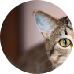
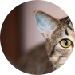

ejemplo@gmail.com
(809) 123-4567


Inicio
Servicios
Testimonios
Contacto
Nosotros
App Móvil
SERVICIOS
Preventive Care / Vaccinations
Los exámenes de bienestar regulares son una de las cosas más importantes que puedes hacer para mantener a tu gato saludable. Recomendamos realizar estos exámenes al menos una vez al año hasta que tu gato cumpla 10 años. Después de esa edad, recomendamos un examen cada seis meses.
Una de las principales razones para traer a tu gato regularmente es monitorear y tratar condiciones antes de que se vuelvan intratables. Como los gatos no pueden comunicarnos verbalmente cómo se sienten, una enfermedad o problema de salud podría estar presente antes de que notes síntomas. El beneficio de la detección temprana es que nos permite manejar o corregir un problema antes de que se vuelva demasiado grave. Debido a que los gatos envejecen mucho más rápido que nosotros, los exámenes regulares son una de las mejores maneras de ayudarles a tener una vida larga y saludable.
Durante un examen de bienestar, la Dra. Cacciottoli realizará un examen físico completo y hará preguntas relacionadas con la salud de tu gato. Es útil saber cuánto come, qué tipo de comida consume y si ha vomitado o tenido heces sueltas o duras. Si encontramos algún problema, discutiremos pruebas diagnósticas para determinar la causa y recomendaremos un plan de tratamiento.
También se podrían aplicar vacunas si son necesarias. Recomendamos llevar una muestra de heces al menos una vez al año para detectar parásitos intestinales. Después de los 10 años, sugerimos análisis de sangre anuales, que incluyen un conteo completo de células sanguíneas, análisis de química para evaluar la función de los órganos y los niveles de tiroides. Además, todo gato debería ser examinado para FIV/Felv al menos una vez, generalmente cuando se adquiere un nuevo gato o si los gatos salen al exterior.
Una de las principales razones para traer a tu gato regularmente es monitorear y tratar condiciones antes de que se vuelvan intratables. Como los gatos no pueden comunicarnos verbalmente cómo se sienten, una enfermedad o problema de salud podría estar presente antes de que notes síntomas. El beneficio de la detección temprana es que nos permite manejar o corregir un problema antes de que se vuelva demasiado grave. Debido a que los gatos envejecen mucho más rápido que nosotros, los exámenes regulares son una de las mejores maneras de ayudarles a tener una vida larga y saludable.
Durante un examen de bienestar, la Dra. Cacciottoli realizará un examen físico completo y hará preguntas relacionadas con la salud de tu gato. Es útil saber cuánto come, qué tipo de comida consume y si ha vomitado o tenido heces sueltas o duras. Si encontramos algún problema, discutiremos pruebas diagnósticas para determinar la causa y recomendaremos un plan de tratamiento.
También se podrían aplicar vacunas si son necesarias. Recomendamos llevar una muestra de heces al menos una vez al año para detectar parásitos intestinales. Después de los 10 años, sugerimos análisis de sangre anuales, que incluyen un conteo completo de células sanguíneas, análisis de química para evaluar la función de los órganos y los niveles de tiroides. Además, todo gato debería ser examinado para FIV/Felv al menos una vez, generalmente cuando se adquiere un nuevo gato o si los gatos salen al exterior.

TESTIMONIOS
De nuestros visitantes
“Estas personas son el equipo de veterinarios amantes de los animales más
increíble con el que mi esposa y yo hemos tenido el placer de trabajar. Se
especializan en medicina felina y hacen todo lo posible para asegurarse de
que los miembros peludos de su familia reciban el mejor cuidado posible. Los
hemos utilizado durante años. ¡Reciben mi más alta recomendación!”
- Alguien
“¡El personal aquí es maravilloso! La Dra. Cacciottoli es estupenda, se
preocupa genuinamente por asegurarse de que los pacientes tengan una visita
lo más libre de estrés posible y también dedica una buena cantidad de tiempo
a explicarles a los ansiosos padres de gatitos cómo cuidarlos. Sus precios
son razonables y el personal de apoyo es excelente. ¡Definitivamente
recomiendo Cat Clinic para las necesidades de sus bebés peludos!”

 

- Otra persona